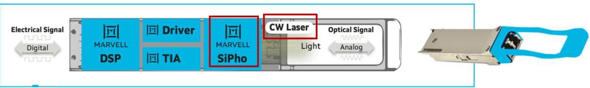
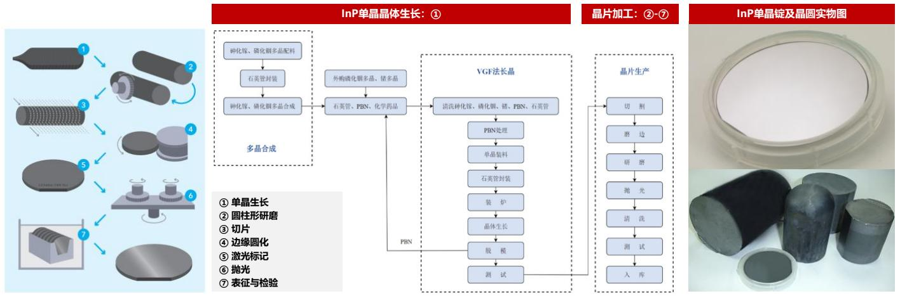

| 公司 | 代码 | 子赛道 | 持仓类型 | 核心看点 | 近期边际 |
|---|---|---|---|---|---|
| 📦 主要光模块供应商 | |||||
| 中际旭创 | 300308 | 光模块龙头 | 🟢 核心仓 | 800G+1.6T双主线，2026E 1.6T贡献56%收入；北美大客户深度绑定 | 2026E归母净利372亿，目标价1171元，测算upside 91% |
| 新易盛 | 300502 | 光模块（第二梯队） | 🟢 核心仓 | 1.6T快速放量，2026E 1.6T占34%，800G仍主力；性价比优势显著 | 2026E归母净利246亿，目标价907元，测算upside 90% |
| 🟡 新光模块方案（新进入者） | |||||
| 东山精密 | 002384 | 新光模块（代工） | 观察 | 光模块拓展中，体量仍小 | — |
| 华工科技 | 000988 | 新光模块 | 观察 | 自研光芯片布局，产品覆盖400G/800G；海外LPO和阿里NPO是弹性项 | 2026E 800G收入61亿；加LPO后净利弹性至32.9亿 |
| 光迅科技 | 002281 | 光模块（电信主） | 中性 | 数通份额偏低，电信侧稳定；AI受益有限，中东订单提供弹性 | 2026E 800G收入68.8亿；中东调整后净利19.1亿 |
| 联特科技 | 301205 | 新光模块 | 观察 | 中速率模块为主，高端能力待验证 | — |
| 剑桥科技 | 603083 | 新光模块 | 观察 | 400G数通切入，800G路线图中 | — |
| 环旭电子 | 601231 | 新光模块（代工） | 中性 | ODM属性，光模块毛利率较低 | — |
| 立讯精密 | 002475 | 新光模块（代工） | 中性 | 800G切入，规模体量大但光模块占比小 | — |
| 🟩 无源器件（光器件/CPO） | |||||
| 天孚通信 | 300394 | 光引擎/CPO核心 | 🔵 进攻仓 | 1.6T光引擎代工：2025E 36.75万只→2026E 250万只；CPO主要受益方 | 2026E总收入140亿；CPO相关收入16.4亿，2027E放大至118亿 |
| 炬光科技 | 688167 | 激光器光源 | 观察 | 半导体激光器，AI数据中心应用拓展 | — |
| 光库科技 | 300620 | 光纤器件 | 中性 | 光隔离器/环形器为主，AI受益间接 | — |
| 腾景科技 | 688195 | CPO早期 | 观察 | CPO光引擎产品送样，2026-2027导入期 | — |
| 太辰光 | 300570 | 光无源器件 | 中性 | 光分路器/熔融拉锥，AI受益较间接 | — |
| 致尚科技 | 301486 | 光器件 | 中性 | 消费电子连接器延伸，光通信弹性仍需订单验证 | 暂未进入核心测算表公司页 |
| 蓝特光学 | 688127 | 精密光学元件 | 中性 | 精密光学玻璃，光通信用量小 | — |
| 🔴 激光器（光芯片） | |||||
| 源杰科技 | 688498 | CW 激光器（硅光核心） | 🟡 观察仓 | 硅光渗透率提升红利；2025E CW收入 4.1亿→2026E 17.9亿（+335%） | 2026E CW出货5136万只，市占率约24%；收入20.7亿 |
| 云南锗业 | 002428 | InP 衬底 | 观察 | InP衬底供给稀缺，AI激光器原材料 | — |
| 三安光电 | 600703 | InP 激光器 | 观察 | EML激光器布局，产能爬坡中 | — |
| 卓胜微 | 300782 | InP 激光器 | 中性 | 主营滤波器，InP激光器为探索方向 | — |
| 方案 | 2026E | 2027E | ||||
|---|---|---|---|---|---|---|
| 400G | 800G | 1.6T | 400G | 800G | 1.6T | |
| 总需求量 | 2,000 | 7,000 | 3,000 | 1,500 | 8,000 | 8,000 |
| 8*50G EML | 100（5%） | 0 | 0 | 75（5%） | 0 | 0 |
| 4*100G EML | 800（40%） | 0 | 0 | 525（35%） | 0 | 0 |
| 8*100G EML | 0 | 2,800（40%） | 0 | 0 | 3,200（40%） | 0 |
| 4*200G EML | 0 | 350（5%） | 0 | 0 | 160（2%） | 0 |
| 8*200G EML | 0 | 0 | 900（30%） | 0 | 0 | 2,400（30%） |
| 4*100G VCSEL | 500（25%） | 0 | 0 | 300（20%） | 0 | 0 |
| 8*100G VCSEL | 0 | 350（5%） | 0 | 0 | 640（8%） | 0 |
| 硅光 | 600（30%） | 3,500（50%） | 2,100（70%） | 600（40%） | 4,000（50%） | 5,600（70%） |
| 光芯片类型 | 2026E | 2027E | ||||||
|---|---|---|---|---|---|---|---|---|
| 400G | 800G | 1.6T | 合计 | 400G | 800G | 1.6T | 合计 | |
| 100G EML | 3,200 | 22,400 | 0 | 25,600 | 2,100 | 25,600 | 0 | 27,700 |
| 200G EML | 0 | 1,400 | 7,200 | 8,600 | 0 | 640 | 19,200 | 19,840 |
| CW DFB | 1,200 | 14,000 | 8,400 | 23,600 | 1,200 | 16,000 | 21,280 | 38,480 |
| 合计 | 57,800 | 86,020 | ||||||
| 供应商 | 2026E | 2027E | ||||||
|---|---|---|---|---|---|---|---|---|
| 100G EML | 200G EML | CW DFB | 合计 | 100G EML | 200G EML | CW DFB | 合计 | |
| Lumentum | 7,000 | 2,500 | 1,500 | 11,000 | 8,000 | 6,000 | 3,000 | 17,000 |
| Coherent | 2,500 | 500 | 2,000 | 5,000 | 3,000 | 1,500 | 3,000 | 7,500 |
| Avago | 2,000 | 3,000 | 2,000 | 7,000 | 3,000 | 6,000 | 3,000 | 12,000 |
| 索尔思 | 8,000 | 0 | 0 | 8,000 | 15,000 | 800 | 15,000 | 30,800 |
| 源杰科技 | 0 | 0 | 6,000 | 6,000 | 0 | 0 | 18,000 | 18,000 |
| 仕佳光子 | 0 | 0 | 1,000 | 1,000 | 0 | 0 | 2,000 | 2,000 |
| 长光华芯 | 1,500 | 0 | 0 | 1,500 | 3,000 | 0 | 0 | 3,000 |
| 永鼎 | 0 | 0 | 1,000 | 1,000 | 0 | 0 | 2,000 | 2,000 |
| Landmark+环宇 | 0 | 0 | 2,000 | 2,000 | 0 | 0 | 4,000 | 4,000 |
| 日本供应商（三菱、住友、古河等） | 8,000 | 2,000 | 8,000 | 18,000 | 8,000 | 4,500 | 10,000 | 22,500 |
| 其他（南京镭芯、纳真等） | 0 | 0 | 1,500 | 1,500 | 1,000 | 0 | 3,000 | 4,000 |
| 合计 | 29,000 | 8,000 | 25,000 | 40,000 | 18,800 | 63,000 | ||
| 年份 | 项目 | 100G EML | 200G EML | CW DFB | 判断 |
|---|---|---|---|---|---|
| 2026E | 模块良率 | 90% | 85% | 90% | 100G EML小幅过剩；200G EML缺口最明显；CW DFB仍偏紧。 |
| 实际出货产能 | 26,100 | 6,800 | 22,500 | ||
| 实际全行业需求 | 25,600 | 8,600 | 23,600 | ||
| 供需缺口 | +2.0% | -20.9% | -4.7% | ||
| 2027E | 模块良率 | 90% | 88% | 90% | 100G EML与CW DFB转为宽松；200G EML仍缺口16.6%，继续约束1.6T EML路线。 |
| 实际出货产能 | 36,000 | 16,544 | 56,700 | ||
| 实际全行业需求 | 27,700 | 19,840 | 38,480 | ||
| 供需缺口 | +30.0% | -16.6% | +47.3% |
| 年份 | 项目 | 400G | 800G | 1.6T | 100G EML需求 | 200G EML需求 | CW DFB需求 | CASE供需结论 |
|---|---|---|---|---|---|---|---|---|
| 2026E | 可满足光模块出货 | 2,000 | 5,356 | 2,556 | 22,482 | 6,182 | 19,579 | 三类芯片均可满足 CASE 出货，CW DFB安全垫约14.9%；200G EML安全垫约10.0%。 |
| 方案假设 | 硅光30% | 硅光50% | 硅光75% | |||||
| 2027E | 可满足光模块出货 | 1,500 | 9,000 | 8,000 | 34,800 | 17,800 | 41,700 | 若800G/1.6T继续放量，200G EML CASE仍有约7.1%缺口；CW DFB受扩产拉动转为较宽松。 |
| 方案假设 | 硅光30% | 硅光50% | 硅光75% |
[YYMMDD] 来源→事件| 速率 | 主流方案 | 商用状态 | A股核心受益 | 价格区间（USD） | 关键里程碑 |
|---|---|---|---|---|---|
| 100G | VCSEL/EML | ⚫ 退出 | — | $65-90 | 快速降价，AI需求可忽略 |
| 200G | EML | 🔵 存量 | — | $103-115 | 存量消化，无增量 |
| 400G | EML DR/FR/LPO | 🟠 成熟/过剩 | 旭创（降价）、新易盛 | $210-290 | 旭创400G出货：440万→257万（2025E→2026E 下滑） |
| 800G | EML/硅光 SR/DR/LPO | 🟢 放量主力 | 旭创 · 新易盛 · 天孚（光引擎） | $340-680 | 2026E实际出货 5,229万颗（+124% YoY）；硅光渗透率 20%→45%→60%（2024/25E/26E） |
| 1.6T | EML/硅光 DR/FR/LPO | 🔵 导入爆发 | 旭创 · 新易盛 · 天孚 · 源杰（CW激光器） | $850-1200 | 2026E 有效需求3000万颗（+23×）；200G EML为核心短缺；硅光60%→80%渗透率 |
| NPO | 6.4T NPO / 板载低功耗互联 | 🟣 2027放量 | 旭创 · 新易盛 | TBD | 2027E AWS 1000万只；旭创模型新增6.4T NPO收入710亿元，新易盛新增426亿元 |
| CPO | 硅光+CW 激光器 | 🟡 早期导入 | 天孚通信 · 腾景科技 | TBD | 2026-2027为送样→量产窗口期；消除 pluggable 功耗损耗 |
| 维度 | 传统可插拔（DSP） | LPO 线性直驱 | NPO 近封装 | CPO 共封装 |
|---|---|---|---|---|
| 光电转换位置 | 前面板模块内 | 前面板模块内 | ASIC 旁同板 | ASIC 同一封装内 |
| 是否含 DSP | 有（功耗大头） | 无（直接线性驱动） | 多无 | 无 |
| 相对功耗 | 基准 100% | ≈ 50-70%（省 DSP） | ≈ 40-50% | ≈ 30% 或更低 |
| 时延 | 较高（DSP 处理） | 低 | 低 | 最低 |
| 可插拔/维护 | 可插拔，最易维护 | 可插拔 | 差 | 最差（坏需换整机） |
| 量产成熟度 | 成熟（主流） | 小批量送样 | 少量部署 | 早期导入 |
| 技术基础 | EML / 硅光 | 硅光 / EML，强调线性度 | 硅光 | 硅光 + 外置 CW 光源 |
| 主要推动者 | 全行业 | Meta 等云厂、博通 | 博通（早期） | 英伟达 / 博通（交换机侧） |
| A股核心受益 | 旭创·新易盛·天孚 | 旭创·新易盛·天孚 | 旭创·新易盛·天孚 | 天孚（光引擎）·源杰（CW光源）·腾景/太辰光（无源） |
| 零部件 | 归属 | 可插拔 价值量 |
CPO 价值量 |
OCS 价值量 |
天孚 通信 |
腾景 科技 |
光库 科技 |
仕佳 光子 |
德科立 | 炬光 科技 |
源杰 科技 |
福晶 科技 |
致尚 科技 |
|---|---|---|---|---|---|---|---|---|---|---|---|---|---|
| 光源 · 激光器 | |||||||||||||
| 激光二极管（LD/DFB） | 三者共用 | 10% | — | — | |||||||||
| ELS 外置激光模块（ELSFP） | CPO独有 | — | 20% | — | |||||||||
| 光电转换 · 调制解调 | |||||||||||||
| DSP 芯片（oDSP） | 可插拔独有 | 30% | — | — | ✕ 无法切入，被 Marvell / Inphi 垄断 | ||||||||
| 调制器（MZM/EAM/MRM） | 三者共用 | 8% | 20% | — | |||||||||
| 光电二极管 + TIA（PD+TIA） | 三者共用 | 15% | 10% | — | |||||||||
| PIC 光子集成芯片 | CPO独有 | — | 20% | — | ✕ 无法切入，由 Lumentum / Coherent / TSMC 主导 | ||||||||
| Switch ASIC | CPO独有 | — | 自研 | — | ✕ 无法切入，与 PIC 共封装；Broadcom / Nvidia 垄断 | ||||||||
| 精密光学无源器件（A 股核心战场） | |||||||||||||
| FA / FAU 光纤阵列 | 三者共用 | 2% | 8% | 10% | |||||||||
| 隔离器（含 YVO₄ 钒酸钇晶体） 腾景供 Coherent |
三者共用 | 2% | 2% | 5% | |||||||||
| MPO 连接器 / 跳线 | 三者共用 | 1% | 1% | 3% | |||||||||
| 准直透镜阵列（2D collimator） 腾景已通过 Calient 供货谷歌/Meta |
OCS独有 | — | — | 15% | |||||||||
| MEMS 微镜阵列晶圆 | OCS独有 | — | — | 40% | Lumentum 自研，国内有机会代工 | ||||||||
| 环形器（Circulator） | OCS独有 | — | — | 8% | |||||||||
| 封装 · 结构 · 连接 | |||||||||||||
| 先进封装（CoWoS / SoIC） | CPO独有 | — | 13% | — | 台积电 CoWoS/SoIC 主导（联动「先进封装」看板） | ||||||||
| 气密封装（Hermetic） | OCS独有 | — | — | 5% | |||||||||
| Shuffle box（光纤管理盒） | CPO独有 | — | 4% | — | |||||||||
| 模块外壳 / QSFP 笼（Cage） | 可插拔独有 | — | — | — | |||||||||
| 控制 · 电气 | |||||||||||||
| MEMS 驱动高压电路（DAC/ADC） | OCS独有 | — | — | 5% | |||||||||
| 控制 PCB + SDN 软件 | 三者共用 | — | 4% | 8% | |||||||||
| 光纤 · 传输介质 | |||||||||||||
| 单模光纤 / 光缆（SMF） | 三者共用 | — | — | — | 名单外：长飞 / 亨通光电 | ||||||||
| 公司 / 角色 | 立场 | CPO/NPO 节奏与定调 | 英伟达合作 / 关键数据 |
|---|---|---|---|
| Coherent 全栈光器件 |
最积极 | scale-out 2026H2 起收入、scale-up 2027H2 放量；CPO 2030 市场 $150 亿；OCS 市场上调 20→40 亿，新增长引擎合计 >$200 亿 | 英伟达投 $20 亿（主要扩 InP），覆盖 scale-out+up、至 2030；CW 量产 100mW / 开发 400mW(CPO)；全球首个 400G 差分 EML |
| Lumentum CW 激光 / ELS |
最积极 | scale-out 2026H2、scale-up 2027H2；CPO 市场 >$150 亿；超高功率激光 2026Q4 可观收入、2027H1 交付数亿美元；ELS 市场≈超高功率激光 2 倍 | 2026/3 英伟达 $20 亿股权 + 至 2030 供应（含高功率 CW）；全栈：高功率 CW+ELS+光纤连接+隔离器+TEC；EML 缺口 >30% |
| Broadcom CPO 交换机先行者 |
平台卡位 | 财报不单列 CPO 节奏，归入"AI networking / 光互连价值量迁移"；产品上 Bailly 51.2T 已量产、Tomahawk6-Davisson CPO 推进 | 不押单一节奏；判断 800G→1.6T 驱动交换芯片/DSP/光模块/CPO/NPO/SerDes 价值量重排，把 ASIC 客户延伸到网络硅 |
| Marvell DSP / 定制硅 / 光 |
长期估值 | CPO 非短期收入主线，是长期估值上限；收购 Celestial AI（光子织物）被一级云厂选为下代 XPU scale-up 方案；FY2028 scale-up 光学收入翻倍+ | 与英伟达三支柱：硅光 + NVLink Fusion + AI-RAN；第三代 6.4T 光引擎深度合作；近端确定性在 800G/1.6T/TIA·driver/DCI/T100 |
| Corning 光纤 / 连接 / 玻璃 |
最谨慎 | CPO 规模化收入未纳入计划、看 2028+，商业化时点不确定；长期看好（光子比电子省电 3 倍+、高比特率达 20 倍+） | 近端靠高密光纤/连接/DCI 吃 AI；与 Meta 60 亿美元多年协议（光纤/线缆/连接） |
| 维度 | EML（电吸收调制激光器） | CW（连续波光源） |
|---|---|---|
| 本质 | DFB 激光器 + EAM 调制器单片集成 | 大功率 CW DFB 激光器（仅出恒定光） |
| 调制在哪做 | 芯片内（EAM 外调制）自带 | 转移到硅光 PIC 上的 MZM 调制器 |
| 用于 | 传统分立模块（封进 TOSA） | 硅光模块 / CPO（外置光源） |
| 结构 / 外延 | 复杂、外延链条长 | 更简单、链条短、良率更优 |
| 芯片面积 | 基准（宽 200-250µm/长<500µm） | 约 EML 的 2 倍（需更高功率、腔更长） |
| 功率需求 | — | 70mW(400/800G)→100mW(1.6T)→300-400mW(CPO) |
| 壁垒 / 国产 | 最高，国产追赶中（200G 尤难） | 较低，国产率先导入的契机 |

| 模块总速率 | 主流方案 | 单波速率 | 通道数 |
|---|---|---|---|
| 400G | 8×50G 或 4×100G | 50G / 100G | 8 / 4 |
| 800G | 8×100G（8 颗 100G EML） | 100G | 8 |
| 1.6T | 8×200G（200G EML 或硅光 PIC） | 200G | 8 |
| 3.2T | 8×400G（需 448G SerDes，或引入 TFLN） | 400G | 8 |

| 各项收入 | 2022A | 2023A | 2024A | 2025A | 2026E | 2027E |
|---|---|---|---|---|---|---|
| 收入总览 | ||||||
| 总收入 | 96.42 | 107.24 | 238.62 | 382.40 | 1090.73 | 2739.61 |
| 1.6T 产品 | ||||||
| 1.6T出货量（万只） | — | — | 3 | 57 | 1182 | 3353 |
| 单价（美金） | — | — | 1300.0 | 1000.0 | 720.0 | 612.0 |
| 1.6T收入（亿元） | — | — | 2.8 | 40.4 | 604.1 | 1456.7 |
| 1.6T收入占比（%） | — | — | 1% | 11% | 55% | 53% |
| 800G 产品 | ||||||
| 800G出货量（万只） | 8 | 71 | 373 | 796 | 1596 | 2316 |
| 单价（美金） | 900 | 720.0 | 554.4 | 432.4 | 380.0 | 323.0 |
| 800G收入（亿元） | 5.1 | 36.3 | 146.9 | 244.3 | 430.5 | 531.1 |
| 800G收入占比（%） | 5% | 34% | 62% | 64% | 39% | 19% |
| 成熟速率与其他收入 | ||||||
| 400G收入（亿元） | 41.3 | 35.2 | 58.0 | 71.9 | 35.6 | 22.7 |
| 400G收入占比（%） | 43% | 33% | 24% | 19% | 3% | 1% |
| 200G收入（亿元） | 24.0 | 10.4 | 6.4 | 5.8 | 3.0 | 2.2 |
| 100G收入（亿元） | 10.9 | 9.1 | 9.5 | 8.7 | 6.0 | 4.3 |
| 其他收入（亿元） | 15.1 | 16.2 | 15.1 | 11.4 | 11.4 | 12.6 |
| 6.4T NPO 产品 | ||||||
| 6.4T NPO收入（亿元） | — | — | — | — | — | 710 |
| 出货量（万只） | — | — | — | — | — | 500 |
| 单价（美金） | — | — | — | — | — | 2000 |
| 客户占收比% | ||||||
| 谷歌 | — | — | — | 71 | 359 | 882 |
| 谷歌% | — | — | — | 18% | 33% | 32% |
| 英伟达 | — | — | — | 56 | 278 | 436 |
| 英伟达% | — | — | — | 15% | 26% | 16% |
| 亚马逊 | — | — | — | 46 | 106 | 455 |
| 亚马逊% | — | — | — | 12% | 10% | 17% |
| 净利润拆分 | ||||||
| 1.6T净利率 | — | — | 35.0% | 36.0% | 36.0% | 36.0% |
| 1.6T净利润（亿元） | — | — | 1.0 | 14.5 | 217.5 | 524.4 |
| 1.6T净利润占比（%） | — | — | 2% | 13% | 61% | 59% |
| 800G净利润（亿元） | 1.0 | 10.2 | 36.7 | 80.6 | 137.8 | 164.6 |
| 其他业务净利润（亿元） | 11.3 | 11.6 | 14.0 | 12.8 | 7.3 | 5.4 |
| NPO净利润（亿元） | — | — | — | — | — | 227.2 |
| 归母净利润（亿元） | 12.36 | 21.8 | 51.7 | 108.0 | 355.4 | 891.3 |
| 归母净利率 | 12.8% | 20.3% | 21.7% | 28.2% | 32.6% | 32.5% |
| 各项收入 | 2022A | 2023A | 2024A | 2025E | 2026E | 2027E |
|---|---|---|---|---|---|---|
| 收入总览 | ||||||
| 总收入 | 33.11 | 30.98 | 86.47 | 278.73 | 647.63 | 1533.32 |
| 1.6T 产品 | ||||||
| 1.6T出货量（万只） | — | — | 0.5 | 11 | 419 | 1398 |
| 单价（美金） | — | — | 1300.0 | 1001.0 | 750.8 | 638.1 |
| 1.6T收入（亿元） | — | — | 0.5 | 8.0 | 223.2 | 633.2 |
| 1.6T收入占比（%） | — | — | 1% | 3% | 34% | 41% |
| 800G 产品 | ||||||
| 800G出货量（万只） | 0 | 0 | 120 | 537 | 1260 | 1610 |
| 单价（美金） | 900 | 650.0 | 520.0 | 457.6 | 402.7 | 362.4 |
| 800G收入（亿元） | 0 | 0 | 44.4 | 174.4 | 360.1 | 414.3 |
| 800G收入占比（%） | 0% | 0% | 51% | 63% | 56% | 27% |
| 成熟速率与其他收入 | ||||||
| 400G收入（亿元） | 12.4 | 14.9 | 35.9 | 74.8 | 39.6 | 36.2 |
| 200G收入（亿元） | 0 | 1.1 | 2.5 | 2.2 | 1.2 | 0.9 |
| 100G收入（亿元） | 6.4 | 4.8 | 4.6 | 4.3 | 2.5 | 1.8 |
| 其他收入（亿元） | 14.3 | 10.2 | -1.5 | 15.0 | 21.0 | 21.0 |
| 6.4T NPO 产品 | ||||||
| 6.4T NPO收入（亿元） | — | — | — | — | — | 426 |
| 出货量（万只） | — | — | — | — | — | 300 |
| 客户占收比% | ||||||
| 谷歌 | — | — | — | 0 | 23 | 79 |
| 英伟达 | — | — | — | 20 | 168 | 299 |
| 亚马逊 | — | — | — | 75 | 167 | 233 |
| 净利润拆分 | ||||||
| 1.6T净利润（亿元） | — | — | 0.1 | 2.6 | 75.9 | 253.3 |
| 800G净利润（亿元） | 0 | 0 | 20.0 | 71.5 | 147.7 | 178.1 |
| NPO净利润（亿元） | — | — | — | — | — | 149.1 |
| 归母净利润（亿元） | 9.0 | 6.9 | 28.4 | 97.0 | 241.3 | 592.7 |
| 归母净利率 | 27.3% | 22.3% | 32.8% | 34.8% | 37.3% | 38.7% |
| 各项收入 | 2023 | 2024 | 2025E | 2026E | 2027E | 2028E |
|---|---|---|---|---|---|---|
| 收入总览 | ||||||
| 总收入（亿元） | 19.38 | 32.51 | 51.15 | 112.19 | 306.43 | — |
| 光引擎代工 | ||||||
| 光引擎收入（亿元） | 6.87 | 16.09 | 30.00 | 75.39 | 202.54 | — |
| 400G光引擎收入（亿元） | 2.2 | 1.8 | 1.4 | 1.1 | 1.0 | — |
| 800G光引擎收入（亿元） | 4.6 | 14.3 | 13.0 | 13.0 | 23.3 | — |
| 1.6T光引擎出货（万只） | — | — | 36.75 | 240 | 625 | — |
| 1.6T光引擎收入（亿元） | — | — | 15.7 | 61.3 | 178.2 | — |
| 光引擎净利润（亿元） | 1.5 | 5.3 | 10.5 | 27.1 | 74.9 | — |
| 无源器件与其他业务 | ||||||
| 光无源器件收入（亿元） | 11.83 | 15.76 | 20.49 | 27.66 | 38.72 | — |
| 光无源器件净利润（亿元） | 5.62 | 7.88 | 10.24 | 13.83 | 19.36 | — |
| 其他净利润（亿元） | 0.2 | 0.2 | 0.2 | 0.2 | 0.2 | — |
| CPO 相关业务 | ||||||
| 天孚CPO相关收入（亿元） | — | — | — | 8.5 | 64.5 | 131.7 |
| 天孚CPO相关利润（亿元） | — | — | — | 2.7 | 20.0 | 39.9 |
| 利润总览 | ||||||
| 毛利润（亿元） | 10.5 | 18.6 | 28.3 | 60.1 | 158.1 | — |
| 归母净利润（亿元） | 7.3 | 13.4 | 21.0 | 43.9 | 114.5 | — |
| 归母净利率 | — | 41.3% | 41.0% | 39.1% | 37.4% | — |
| 各项收入 | 2023 | 2024 | 2025 | 2026E | 2027E | 2028E |
|---|---|---|---|---|---|---|
| CW 光源总览 | ||||||
| 源杰-CW光源出货量（万只） | — | 86 | 1325 | 6118 | 13373 | 24071 |
| 源杰-CW光源收入（百万元） | — | 30 | 374 | 2048 | 4266 | 7924 |
| CW光源净利润（百万元） | — | 9 | 169 | 1065 | 2346 | 4199 |
| 旭创客户贡献 | ||||||
| 源杰给旭创供应CW光源（万只） | — | 86 | 1082 | 4346 | 9359 | — |
| 源杰-旭创贡献收入（百万元） | — | 30 | 303 | 1365 | 2798 | — |
| 旭创800G硅光占比% | — | 30% | 55% | 70% | 75% | — |
| 旭创1.6T硅光占比% | — | 100% | 100% | 85% | 85% | — |
| 源杰供应份额（1.6T） | — | 0% | 30% | 50% | 55% | — |
| 其他客户贡献 | ||||||
| 其他客户CW需求量（万只） | — | 62 | 1216 | 5908 | 11467 | — |
| 源杰给其他客户供应CW光源（万只） | — | 0 | 243 | 1772 | 4013 | — |
| 源杰-其他客户贡献收入（百万元） | — | 0 | 72 | 682 | 1468 | — |
| 收入利润总览 | ||||||
| 总收入（百万元） | — | 252 | 601 | 2274 | 4503 | — |
| 总利润（百万元） | — | -6 | 191 | 1090 | 2377 | 4230 |
| 净利率 | — | — | 31.8% | 47.9% | 52.8% | — |
| 行业需求与市占率 | ||||||
| 全球CW光源需求量（万只） | — | 1583 | 6046 | 21781 | 43620 | — |
| 源杰市占率 | — | 5.4% | 21.9% | 28.1% | 30.7% | — |
| 指标 | 当前状态 | 验证方向 | 更新时间 |
|---|---|---|---|
| 800G 模块交期 | 16-20 周 | 验证需求仍偏紧 | 2026-05 |
| 1.6T 模块交期 | 20-24 周 | 验证 1.6T 爬坡强度 | 2026-05 |
| 200G EML 交期/报价 | 待持续跟踪 | 验证核心瓶颈是否缓解 | 月度 |
| CW DFB 产能释放 | 源杰/海外供应扩产 | 验证硅光渗透率与供应份额 | 季度 |
| 美股季报 CapEx 指引 | 2026Q2 待观察 | 验证云厂商 AI 资本开支 | 季度 |
| 台股月营收 | 每月10日前后 | 验证光模块链条订单景气 | 月度 |
| 公司 | 角色 | 2026E关键指标 | 验证含义 |
|---|---|---|---|
| Lumentum (LITE) | EML/CW/光模块 | Datacom收入 $29.8亿；净利率22.4% | EML供给释放 |
| LITE 1.6T模块 | 海外模块侧 | 2026E出货63万只，收入$5.36亿 | 验证1.6T海外放量 |
| Coherent (COHR) | 光芯片/模块 | 通信收入$85.0亿，YoY +182% | 上游景气同步 |
| COHR 1.6T模块 | 海外模块侧 | 2026E出货455万只，收入$41.8亿 | 硅光/1.6T兑现强度 |
| OCS/CPO | 下一代互联 | LITE 2026E OCS $4.2亿，CPO/OIO $1.51亿 | 观察2027放量前奏 |